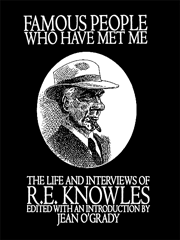

Edited with an introduction by Jean O'Grady
The life of Canadian novelist and Toronto Star interviewer R.E.Knowles (1868-1946), followed by a selection of 35 of his interviews which provide a panorama of life in the inter-war years.
Excerpt from an interview with Agnes Macphail:
“Do you think, Miss Macphail, that it is possible, or easy, for a woman to go into political life, and yet keep radiant and untarnished the inner shine of a woman's modesty, delicacy, sensitiveness, exclusiveness?” Miss Macphail listened patiently to this question, which does sound a little like a bill of lading. “I surely do,” was her reply: “public life broadens, not blunts, a woman's make-up.”... “Do you think your presence in parliament goes far to temper the asperities of political life?” “Not much”, replied candid Agnes. “I'm not much on tempering. I'm no gulf stream in the cold ocean of political life.”
I had never actually heard of R.E. Knowles (1868 – 1946) when William Toye asked me to write the entry for him in the Oxford Companion to Canadian Literature. In the course of my research I discovered an intriguing individual. A popular Presbyterian minister in southern Ontario who wrote best-selling novels on the side, he fell from grace (apparently owing to alcoholism or mental illness), lost his ministry and his wife, and disappeared for five years. When he re-emerged, it was to forge an entirely new career as a writer with the Toronto Star (1922-40), where he functioned as a somewhat weird eccentric. His front-page interviews introduced Torontonians to celebrities visiting the city; they were written with notable self-dramatization and flowery loquaciousness, but also with humour and a novelist’s ear for dialogue.
John Robert Colombo read my Companion entry and asked whether I might like to write a more extensive biography as a preface to a collection of Knowles’ interviews he was planning. I agreed, and had lots of fun following elusive biographical hints – even miraculously finding his granddaughters through an advertisement in the New Bern, North Carolina local paper, and travelling there for a memorable visit. Eventually I ended up finding and editing the interviews themselves, assisted by a research assistant, Margaret Fraser, and my daughter Carrie. Knowles would talk to anyone he could prevail upon to talk to him, from Franklin D. Roosevelt to Babe Ruth. A list of some 1500 interviews we found is available in the book and in a bibliography, Special Writer, in the Toronto Reference Library. The interviews chosen for publication---those with William Butler Yeats, Fritz Kreisler, Mary Pickford, Grey Owl and thirty others---provide a treasury of information on interwar culture and social history, besides being fun to read for anyone who enjoys exploring the byways of Toronto’s and Canada’s past.
Click on the boxes below for details:
Performing artists: Intellectuals and leaders: Political personalities: Sports figures: Literary figures: Public figures: